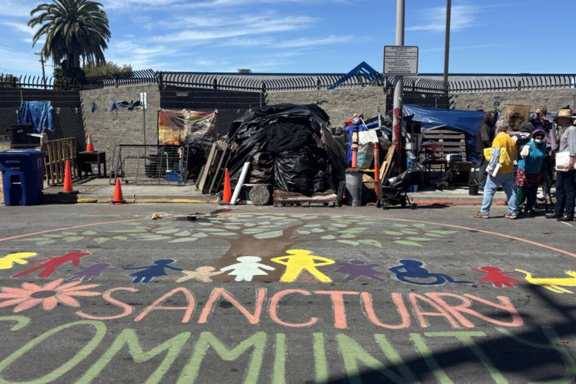
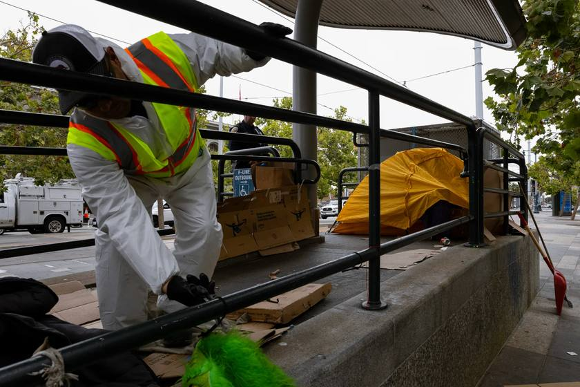
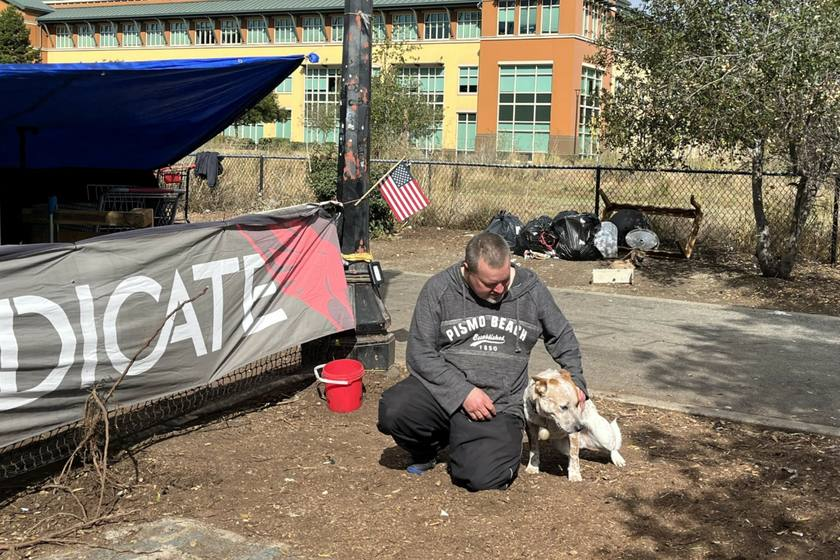
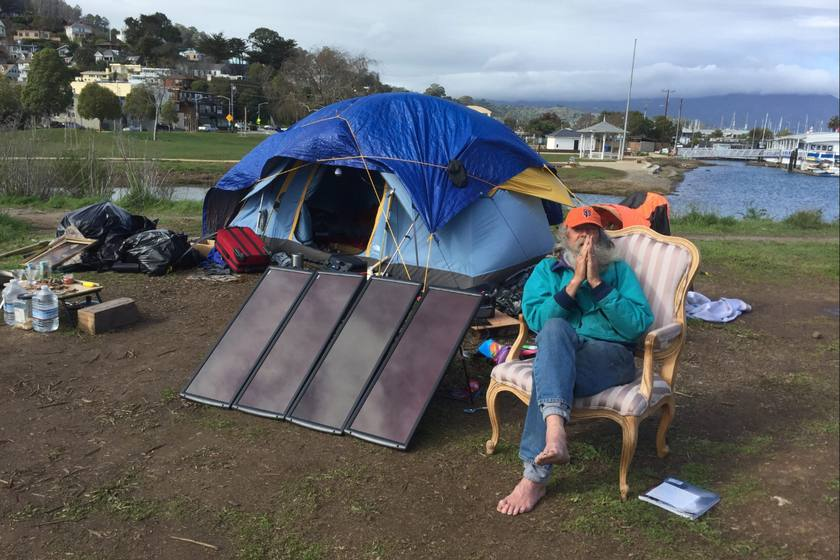
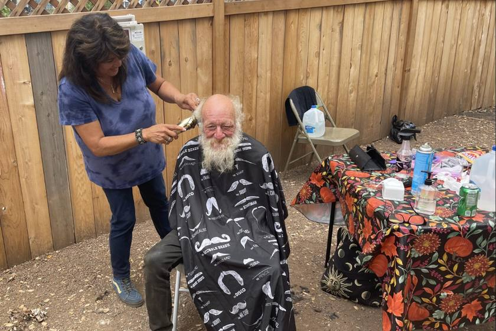

Lawyers, law students and organizers standing with homeless unions
National Legal Network for Homeless Organizing and People's Empowerment
Homeless unions across the country are winning in federal court. HOPE Network exists to make sure every local that organizes has lawyers, law students, litigation support and public-records muscle behind it.
Who we are
A homeless union is an unincorporated association of homeless, formerly homeless and marginally housed people who organize collectively for housing, for protection of their constitutional and statutory rights, and for immediate improvement of the conditions they live in.
The California Homeless Union was born in Salinas on Martin Luther King Day, 2016. Locals followed in Sacramento, Santa Cruz, Marin County, Sausalito, Novato, Berkeley, Santa Rosa and beyond, and the model has spread nationally through the National Union of the Homeless. These unions do not wait for a nonprofit to speak for them. They elect officers, file their own lawsuits, negotiate their own settlements and decide for themselves how settlement money is spent.
We come out of those struggles. Our staff have lived in the encampments, organized the unions, stood in the police line at dawn and argued the motions that followed. We did not arrive at this work from the outside.
We treat litigation as an organizing tool. A lawsuit is one way, among many, that a movement builds power: it buys time, forces the city to the table, puts the union's own account in the public record and turns a sweep into a story with a plaintiff. HOPE Network exists to put that tool in the hands of movement organizers and organizations, on their terms, so that legal work strengthens the union rather than replacing it.
What we do
When a city posts abatement notices, hours matter. We maintain ready-to-file TRO packages, declaration templates and evidence protocols so a local can be in federal court before the sweep begins.
Cities appeal every injunction they lose. We staff the answering briefs, excerpts of record and amicus coordination that keep hard-won protections from being reversed on appeal.
Union members have every right to file their own claims. We train and support members filing small claims and civil rights actions over destroyed property, unlawful seizures and retaliation.
Sweeps run on paperwork. We file and litigate California Public Records Act requests, and their equivalents in other states, for sweep schedules, police body-camera footage, contracts and internal communications.
Most people in an encampment have a disability. We help members document and demand individualized accommodations under the ADA, and enforce court-ordered accommodation processes through special masters and compliance motions.
A ruling that nobody hears about does not change a city's behavior. We work with movement journalists to document sweeps, publish filings and put the union's own voice in the record.
How we win
Homeless union litigation does not depend on a right to camp. Since the Supreme Court's 2024 decision in Grants Pass, the cases that keep winning rest on what the government does to people, not on where they sleep.
The Fourteenth Amendment forbids a government from putting people in a position more dangerous than the one it found them in. A sweep that moves people from shade into extreme heat, or from a community into isolation on a sidewalk, can be enjoined on that basis.
U.S. Const. amend. XIV · Sacramento Homeless Union v. County of Sacramento (E.D. Cal. 2022)
Title II requires an individualized assessment and reasonable modification before a city enforces camping, sidewalk and vehicle rules against a disabled person. A blanket sweep that skips that step is unlawful discrimination.
42 U.S.C. § 12132 · Berkeley Homeless Union v. City of Berkeley, No. 3:25-cv-01414-EMC
At least thirteen state constitutions, including California's, guarantee a right to pursue and obtain safety. Union locals have invoked it directly against cities that evict people into conditions that endanger them.
Cal. Const. art. I, § 1
The record
A selection of homeless union litigation handled by network counsel and staff. Status as of October 2026.
The union sued in February 2025 to stop the clearance of the Eighth and Harrison encampment and won a temporary restraining order within days. In August 2026 the court entered a permanent injunction extending protections to all BHU members citywide: 72 hours' written notice before any seizure or destruction of property, no impoundment of vehicles used as shelter absent a concrete safety finding, and an individualized disability assessment before tents can be removed under the city's shared-sidewalk rules. A Rule 53 special master now adjudicates member accommodation disputes. The city's appeals are pending in the Ninth Circuit.
Permanent injunction · Aug 2026 Ninth Circuit appeals pendingRepresenting roughly 2,700 unhoused Sacramentans, the union won a federal order barring the city from clearing encampments during extreme heat, on the theory that moving people from shade onto open asphalt is a state-created danger. The city appealed and the union defended the order before the Ninth Circuit. The local went on to litigate the closure of the self-governed Camp Resolution and to intervene when the district attorney sued the city to force more enforcement.
Heat injunction · 2022Evelyn Alfred, a 64-year-old disabled woman, filed pro se using a template built for self-represented encampment residents, with the Vallejo Homeless Union and California Homeless Union behind her. The court granted a TRO, ordered the city into settlement talks and, after they failed, entered a preliminary injunction finding Vallejo's conduct amounted to deliberate indifference under the state-created danger doctrine. CalMatters called it a first-of-its-kind order after Grants Pass. The Ninth Circuit dismissed the city's appeal as moot in October 2025 after Alfred moved into permanent housing.
Preliminary injunction · 2025 City's appeal dismissed as mootTen Camp Integrity residents filed pro se under Section 1983 and the ADA; the San Rafael Homeless Union joined with counsel. The October 2023 preliminary injunction let the city enforce its ordinance only if it allowed 400-square-foot campsites for up to four people, helped residents relocate, replaced tents that did not fit, mapped compliant sites and gave due process to anyone requesting a disability accommodation. The city amended the ordinance in May 2024 to match, and the case closed as moot.
Preliminary injunction · Oct 2023 Ordinance amended · closedAfter the city tried to move the Camp Cormorant encampment, the union obtained a TRO in February 2021 and the court ordered the city into negotiations. The resulting settlement paid $540,000 to encampment residents themselves, who decided how it would be spent. Counsel called it a modest legal victory but a real one for the principle that unhoused people can be trusted with their own settlement money.
Settled · 2022The Novato local, organized around the Camp Compassion encampment at Lee Gerner Park, negotiated a settlement agreement with the city establishing a temporary encampment program with coordinated services, and returned to court to enforce it.
Settlement agreementUnion members placed in a county-funded safe parking program were ordered out after being accused of failing to pursue housing, in some cases toward programs that did not exist. The union's intervention forced the county to extend its deadline and retract public statements about union counsel; the suit followed.
ActiveIn the news
Reporting on the homeless union litigation our staff have brought. Scroll sideways or use the arrows; each card opens the article at the outlet that published it.

A federal judge permanently extended protections for union members living in encampments. "The City of Berkeley is prevented from clearing encampments unless they comply with detailed instructions from the court," said Anthony Prince.
Berkeley Homeless Union v. City of Berkeley · Photo: Alastair Boone / KALW News
Read the story →
A federal judge blocked Vallejo from tearing down the shelter of Evelyn Alfred, a 64-year-old disabled woman, in a ruling that showed unhoused residents still have legal ways to push back after Grants Pass. The Ninth Circuit later upheld the order.
Alfred v. City of Vallejo · Photo: Manuel Orbegozo for CalMatters (San Francisco sweep, 2024)
Read the story →
Camp Integrity residents won a preliminary injunction that substantially weakened the city's restrictive camping ordinance and required San Rafael to take on new obligations before enforcing it.
Boyd v. City of San Rafael · Photo: Nikki Silverstein / Pacific Sun
Read the story →
After more than 18 months of litigation, the city settled with the Sausalito Homeless Union: $540,000, with 30 encampment residents each receiving $18,000 for housing-related expenses.
Sausalito/Marin County Chapter v. City of Sausalito · Photo: Pacific Sun
Read the story →
The settlement ended nearly a year of federal litigation, let the Camp Compassion encampment in Lee Gerner Park stay for at least two more years, and struck restrictive language from the city’s camping ordinance.
Marin County Homeless Union v. City of Novato · Photo: Jason Sarris / Pacific Sun
Read the story →People
General Counsel
Lead Organizer and General Counsel for the National Union of the Homeless and the California Homeless Union/Statewide Organizing Council. Under his leadership the union has won unprecedented relief in state and federal court and the Ninth Circuit, relying on the state-created danger doctrine, the ADA and the right to safety in state constitutions. Before housing justice he spent decades inside the labor movement as a shop steward, grievance officer, organizer, business agent and counsel for the Steelworkers, Teamsters, SEIU and National Treasury Employees Union. Law Offices of Anthony D. Prince, Berkeley.
Director of Litigation Support
Advocate with the Santa Rosa Homeless Union and a law student completing California's Law Office Study Program through an apprenticeship at California Rural Legal Assistance. He works on the Berkeley Homeless Union district-court case and its Ninth Circuit appeals, including the excerpts of record and answering briefs, supervises law student research teams, and litigates California Public Records Act cases pro se. He writes on housing, poverty and the legal machinery that produces both. Based in the North Bay.
Director of Organizing & Public Records
Co-founder and President of the Berkeley Homeless Union. A journalist and photographer with a master's from the UC Berkeley Graduate School of Journalism, she has reported on vehicular residents and encampment sweeps as a staff reporter at the San Francisco Public Press, a CatchLight Local Fellow and an Ida B. Wells Fellow. She was arrested while reporting on an Oakland sweep in 2024; the district attorney declined to prosecute. She co-founded the Public Records Enforcement Project.
Join the network
Affiliate your local. Affiliates get emergency filing support, template pleadings, records-request help and a direct line to counsel when a notice goes up.
Join as cooperating counsel. We match lawyers to locals by jurisdiction and need: TRO practice, appellate work, disability law, public records, damages actions.
Work on live cases with real deadlines. Students have built record excerpts, drafted research memos and staffed encampment observation teams on every major union case.
Litigation against a city is expensive even when the lawyers are free. Filing fees, transcripts, expert declarations and travel to hearings come out of the movement's pocket.
Contact
If your encampment has been posted, or your union needs counsel, use the form or reach us directly. Include the city, the date on the notice and whether anyone at the site has a disability.
Dashed items are placeholders until the domain is registered.